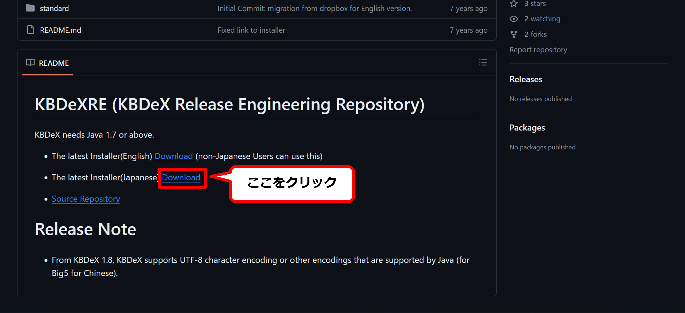
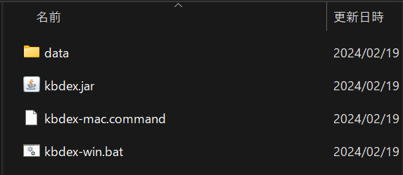

3. KBDeXの準備
3.1. KBDeXのインストール
本項目では，KBDeXのダウンロードおよびインストールについて説明します．
KBDeXのダウンロードサイトにアクセスしてください．（図3-1）

図3-1 KBDeXのダウンロードサイト
「download page」をクリックすると，GitHubのページに移動します（図3-2）．ページ内の「READ ME」項目から，「The latest Installer（Japanese）」の横にある「Download」をクリックし，KBDeXのインストーラファイル（zip形式）をダウンロードしてください．
{kind=link}
図3-2 READ ME項目内の「The latest Installer (Japanese)」の「Download」をクリック
ダウンロードしたインストーラファイルを任意の場所に展開します．Windowsユーザの方はzipファイルを右クリックして「全て展開」を選択してください．Macユーザの方はzipファイルをダブルクリックして展開してください．展開先は「ダウンロード」フォルダのままでも，「ドキュメント」や「書類」フォルダなどお好みの場所に移していただいても結構です．
展開したフォルダ内の「updater.jar」ファイルをダブルクリックしてください（図3-3）．最新バージョンのKBDeXをインストールする確認画面が表示されるので，「はい」をクリックして下さい．

図3-3 展開したフォルダ内のupdater.jarファイルをダブルクリック
Macユーザの方は，OSのセキュリティにより「updater.jar」の実行がブロックされ，「“updater.jar”は，開発元が未確認のため開けません．」というエラーが表示されることがあります．この場合は，OSの「設定」を開き（図3-6），「プライバシーとセキュリティ」から「このまま開く」をクリックして，画面の指示に従ってシステム設定を更新してください．“updater.jar”が起動し，KBDeXを起動する確認画面が表示されたら，「はい」をクリックしてください．

図3-4 “updater.jar”の実行を許可する（MacOS）
プログレスバーが消えた後，展開したフォルダ内に「kbdex」フォルダが表示されます（図3-5，3-6）．これでKBDeXのインストールは完了です．

図3-5 KBDeXのインストール完了後のフォルダ内 （Windows）

図3-5 KBDeXのインストール完了後のフォルダ内 （Mac）
3.2. フォルダ構成
インストールされたKBDeXのフォルダ構成について説明します（図3-7）．

図3-7 インストールされたKBDeXのフォルダおよびファイル
-
「kbdex」フォルダです（図3-8）．このフォルダには以下のものが入っています：対話データ（参照：5. 分析データの準備）を入れる「data」フォルダ，KBDeXを実行する「kbdex.jar」ファイル，Mac OS用の実行ファイルである「kbdex-mac.command」，そしてWindows用の実行ファイルである「kbdex-win.bat」です．KBDeXでの操作や分析は，基本的に「kbdex」フォルダ内で行い，その他のフォルダは使用しません．
図3-8 「KBDeX」のフォルダ構成
-
「Sen1221」フォルダです．この中にはKBDeXを構成するプログラムの実行ファイルやデータファイルなどが含まれています．ユーザがこのフォルダを操作すると，KBDeXの実行に問題が生じる可能性があるため，操作しないでください．
-
「gpl.txt」ファイルです．このファイルには，KBDeXの著作権とライセンスに関する情報が書かれています．
-
「README.txt」ファイルです．KBDeXの起動方法やシステム要件などが簡単に書かれています．KBDeXを操作する前に，このファイルを一読すると良いでしょう．
{kind=link}